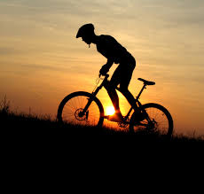

Health
Eating Healthy
• Prepare your own meals: This will help you know what ingredients are in the food you are devouring.
• Keep your plates colorful: Always try to include fruits and vegetables in your meals.
• Read the labels of certain foods: If you do not know half of the ingriedients then eat it with moderation.
• Do not place certain food as "off-limits": This will make you want those certain type of food more. Instead try to reduce your intake of unhealthy food.
• Be sure to have a balance diet: Include all food classes that are neccessary in a good meal.
• Portions: Portions are EVERYTHING!!! Make sure that you are eating enough of each food class and regulating unhealthy foods.
• Don't be scared of carbs: Choose whole grains instead of refinied grains as they will help you stay full longer.
• Before going to sleep: Try to eat lighter meals at night
• Stay hydrated: Drink plenty of water throughout the day
Exercise
| Sport | Benefits and Risks |
|---|---|
Low Impact Sports |
Yoga can ease back pain, stress, and even depression. Risk are involved for those with preexisting medical conditions.
Golf is another low impact sport which helps reduce stress, while still keping the muscles engaged. |
Medium Impact Sport  |
Biking can help with cardiovascular health, is a strength training, and helps level metabolic rates. The risk is the vulnerability to crashing. Weight training is great for muscle building and helps improve bone density. |
High Impact Sports |
High impact sports such as running have a great amount of benefits such as decreasing blood pressure, increasing endurance and muscle mass, and weight loss. There is a risk of injury from running, especially if you wear shoes that do not fit correctly or don't offer enough support, or run on uneven surfaces! Using a jump rope helps tone legs and keeps your whole body in shape. |
Beauty Products

A quick guide to beauty products:
Colorpop is known as the Kylie LipKit Dupe.